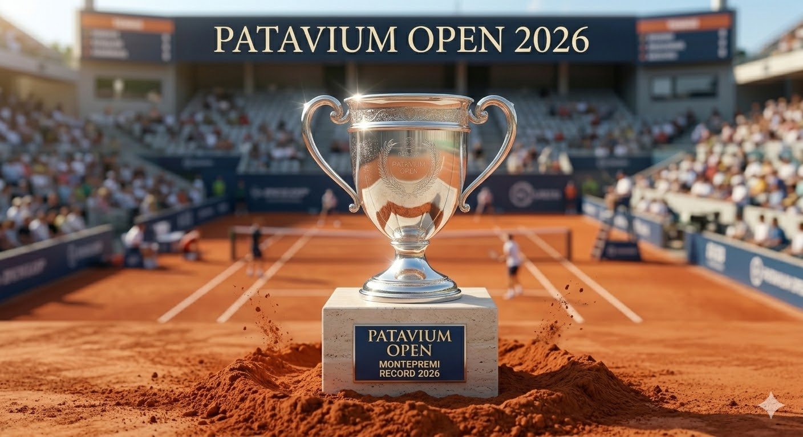

Svelato il montepremi record per l'edizione 2026
Il comitato direttivo ha ufficializzato un clamoroso incremento del 30% del prize money rispetto alla passata stagione, posizionando il torneo tra i più ricchi e prestigiosi della categoria ATP 250. La finale promette già scintille e un assegno da record storico per il vincitore del singolare maschile e femminile.